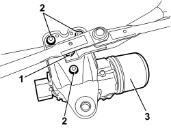
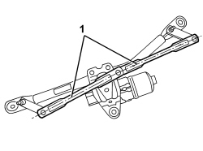

5050B42 WINDSCREEN WIPER MOTOR - R+R
- Path
- Procedures > 50 AUXILIARY UNITS > 5050 SCREEN WASHERS AND HEADLAMP WASH/WIPE > 5050B WINDSCREEN WASH/WIPE > 5050B42 WINDSCREEN WIPER MOTOR - R+R
- Kind
- repair procedure (removal / refitting; the operation number is the code)
- Applies to
- all engines; all production periods
- Interactive page
- https://sloeber94.github.io/elrnDB/alfa/159/en/#/939010954
Applies to: all engines; all production periods
 Removing
Removing
 Refitting
RefittingOp. 5050B34 WINDSCREEN WIPER ARM/S COMPLETE WITH BLADE - R+R
Op. 7025A64 ENGINE COMPARTMENT GASKET - R.R.
Op. 7210E22 R.R. WINDSCREEN BASE TRIM
Op. 5050B38 WINDSCREEN WIPER ASSEMBLY - R+R OR REPAIR
1. Undo the centre nut.
2. Undo the motor fixing bolts.
3. Remove the motor.

Applies to: all engines; all production periods
Refitting
Removing- Check that the windscreen wiper motor is not damaged.
Before refitting the motor, zero it by connecting it temporarily to the connector and activating it using the front windscreen wiper control.
1. Refit the reset motor with the windscreen wiper arms perfectly aligned.

Applies to: all engines; all production periods
- Tighten the bolts fixing the motor.
- Tighten the centre nut.
Op. 5050B38 WINDSCREEN WIPER ASSEMBLY - R+R OR REPAIR
Op. 7210E22 R.R. WINDSCREEN BASE TRIM
Op. 7025A64 ENGINE COMPARTMENT GASKET - R.R.
Op. 5050B34 WINDSCREEN WIPER ARM/S COMPLETE WITH BLADE - R+R
Topics linked from this page (4)
- 5050B34 WINDSCREEN WIPER ARM/S COMPLETE WITH BLADE - R+R
- 5050B38 WINDSCREEN WIPER ASSEMBLY - R+R OR REPAIR
- 7025A64 ENGINE COMPARTMENT GASKET - R.R.
- 7210E22 R.R. WINDSCREEN BASE TRIM